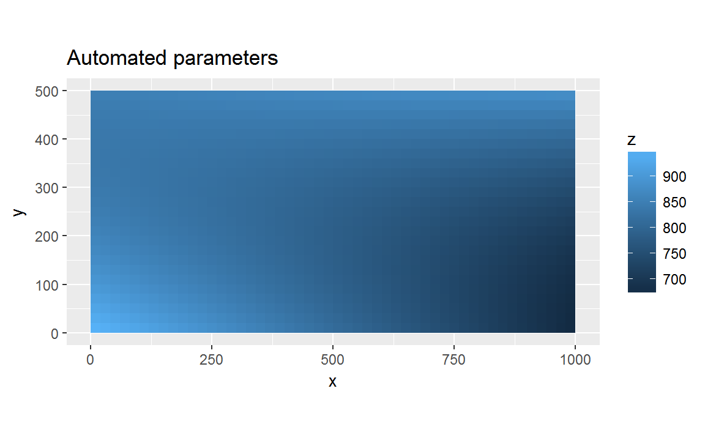
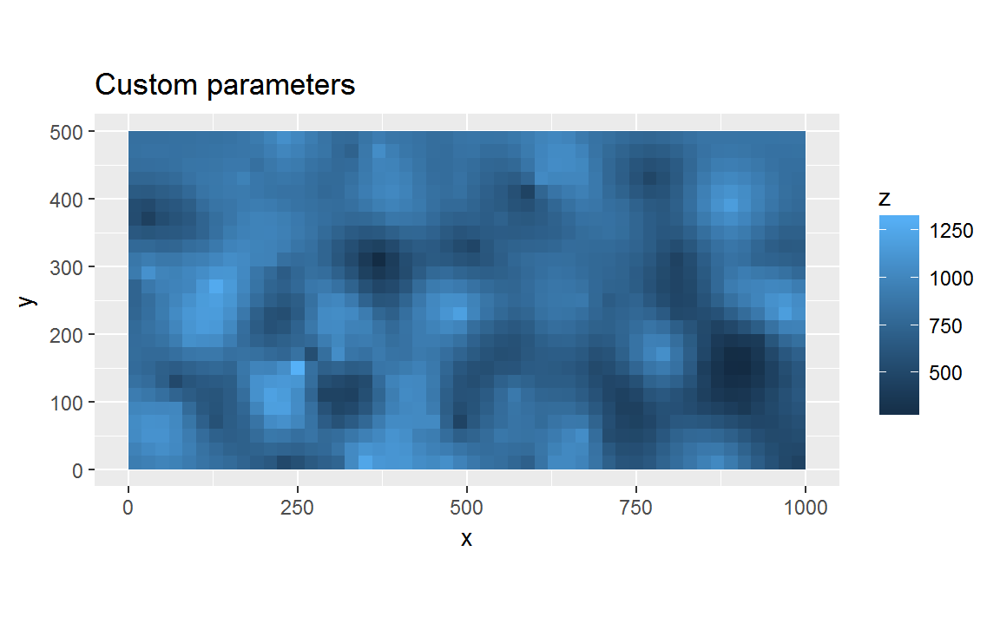

Krige soil data
Based on code developed by Graham Zemunik
Mauro Lepore
2018-05-10
Source:vignettes/krige.Rmd
krige.RmdThis article shows how to krig soil data based on code by Graham Zemunik. Here you’ll learn about krig(), which wrap the original function GetKrigedSoil() and provides the same results with several convenient features. To learn more about these functions see ?krig().
library(fgeo.habitat)
# For easier data manipulation and visualization
library(tidyverse)
#> -- Attaching packages --------------------------------------------- tidyverse 1.2.1 --
#> v ggplot2 2.2.1 v purrr 0.2.4
#> v tibble 1.4.2 v dplyr 0.7.4
#> v tidyr 0.8.0 v stringr 1.3.0
#> v readr 1.1.1 v forcats 0.3.0
#> -- Conflicts ------------------------------------------------ tidyverse_conflicts() --
#> x dplyr::filter() masks stats::filter()
#> x dplyr::lag() masks stats::lag()soil <- soil_random
str(soil)
#> Classes 'tbl_df', 'tbl' and 'data.frame': 100 obs. of 3 variables:
#> $ gx : int 9 9 29 29 29 49 69 69 69 89 ...
#> $ gy : int 110 270 130 290 370 390 90 130 330 190 ...
#> $ m3al: num 927 716 809 1115 419 ...Compare parameters
Krige with automated parameters.
auto <- krig(soil, var = "m3al")$m3al
#>
#> var: m3alUsing: gridsize = 20
#> Gessing: plotdim = c(1000, 500)
#> variog: computing omnidirectional variogram
#> variofit: covariance model used is exponential
#> variofit: weights used: npairs
#> variofit: minimisation function used: optim
#> variofit: covariance model used is circular
#> variofit: weights used: npairs
#> variofit: minimisation function used: optim
#> variofit: covariance model used is cauchy
#> variofit: weights used: npairs
#> variofit: minimisation function used: optim
#> variofit: covariance model used is gaussian
#> variofit: weights used: npairs
#> variofit: minimisation function used: optim
#> ksline: kriging location: 1 out of 1250
#> ksline: kriging location: 101 out of 1250
#> ksline: kriging location: 201 out of 1250
#> ksline: kriging location: 301 out of 1250
#> ksline: kriging location: 401 out of 1250
#> ksline: kriging location: 501 out of 1250
#> ksline: kriging location: 601 out of 1250
#> ksline: kriging location: 701 out of 1250
#> ksline: kriging location: 801 out of 1250
#> ksline: kriging location: 901 out of 1250
#> ksline: kriging location: 1001 out of 1250
#> ksline: kriging location: 1101 out of 1250
#> ksline: kriging location: 1201 out of 1250
#> ksline: kriging location: 1250 out of 1250
#> Kriging performed using global neighbourhoodsummary(auto)
#> Length Class Mode
#> df 3 data.frame list
#> df.poly 3 data.frame list
#> lambda 1 -none- numeric
#> vg 20 variogram list
#> vm 17 variomodel listTry also:

str(auto$df, give.attr = FALSE)
#> 'data.frame': 1250 obs. of 3 variables:
#> $ x: num 10 30 50 70 90 110 130 150 170 190 ...
#> $ y: num 10 10 10 10 10 10 10 10 10 10 ...
#> $ z: num 950 944 939 933 928 ...With custom parameters (arbitrary but based on automated kriging parameters).
params <- list(
model = "circular", range = 100, nugget = 1000, sill = 46000, kappa = 0.5
)
custom <- krig(soil, var = "m3al", params = params, quiet = TRUE)$m3alstr(custom$df, give.attr = FALSE)
#> 'data.frame': 1250 obs. of 3 variables:
#> $ x: num 10 30 50 70 90 110 130 150 170 190 ...
#> $ y: num 10 10 10 10 10 10 10 10 10 10 ...
#> $ z: num 933 955 984 968 919 ...Compare.
title_auto <- "Automated parameters"
ggplot(auto$df, aes(x = x, y = y, fill = z)) +
geom_tile() +
coord_equal() +
labs(title = title_auto)
title_custom <- "Custom parameters"
ggplot(custom$df, aes(x = x, y = y, fill = z)) +
geom_tile() +
coord_equal() +
labs(title = title_custom)
Iterate over multiple soil variables
soil <- soil_fake
soil
#> # A tibble: 30 x 5
#> gx gy mg c p
#> <int> <int> <dbl> <dbl> <dbl>
#> 1 40 193 0.67 1.75 6.5
#> 2 56 30 0.5 2.25 5.90
#> 3 61 102 0.65 2.05 6.40
#> 4 67 110 0.5 2.35 6.40
#> 5 113 16 0.56 1.45 6.20
#> 6 173 134 0.74 1.55 7
#> 7 239 252 0.47 0.85 5.90
#> 8 257 442 0.52 2.25 6.20
#> 9 283 288 0.45 0.45 6.7
#> 10 294 181 0.7 2.45 7.1
#> # ... with 20 more rowsScale soil data to make their values fall within the same range. This is not crucial but will ease visual comparison.
soil_vars <- c("mg", "c", "p")
soil_fake[soil_vars] <- map_df(soil_fake[soil_vars], scale)
soil_fake
#> # A tibble: 30 x 5
#> gx gy mg c p
#> <int> <int> <dbl> <dbl> <dbl>
#> 1 40 193 0.720 0.177 0.613
#> 2 56 30 -0.876 1.03 -0.479
#> 3 61 102 0.532 0.691 0.431
#> 4 67 110 -0.876 1.21 0.431
#> 5 113 16 -0.313 -0.337 0.0668
#> 6 173 134 1.38 -0.166 1.52
#> 7 239 252 -1.16 -1.37 -0.479
#> 8 257 442 -0.689 1.03 0.0668
#> 9 283 288 -1.35 -2.05 0.977
#> 10 294 181 1.00 1.38 1.71
#> # ... with 20 more rows# krig() can take multiple soil variables.
out_lst <- krig(soil_fake, soil_vars, quiet = TRUE)
# Overview results of one var
summary(out_lst$c)
#> Length Class Mode
#> df 3 data.frame list
#> df.poly 3 data.frame list
#> lambda 1 -none- numeric
#> vg 20 variogram list
#> vm 17 variomodel listTransform krig results to a dataframe for easier manipulation and visualization.
# This short form would also work: to_df(out_lst)
out_df <- to_df(out_lst, name = "soil_var", item = "df")
head(out_df)
#> soil_var x y z
#> 1 mg 10 10 -0.31859560
#> 2 mg 30 10 -0.22557887
#> 3 mg 50 10 -0.13720146
#> 4 mg 70 10 -0.05346339
#> 5 mg 90 10 0.02563536
#> 6 mg 110 10 0.10009478
tail(out_df)
#> soil_var x y z
#> 3445 p 890 450 -0.5976629
#> 3446 p 910 450 -0.6128642
#> 3447 p 930 450 -0.6264792
#> 3448 p 950 450 -0.6385080
#> 3449 p 970 450 -0.6489505
#> 3450 p 990 450 -0.6578067